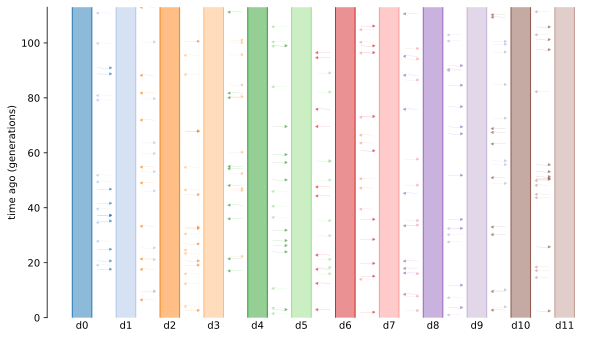
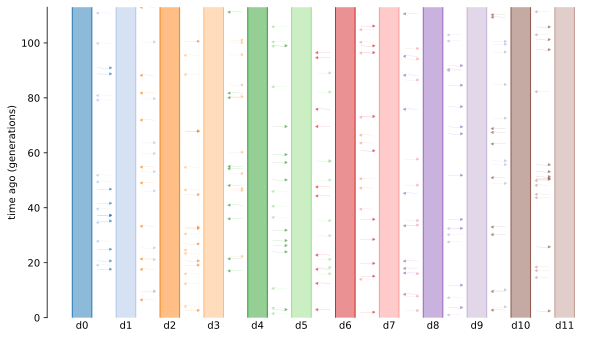

Layout algorithm¶
This page describes demesdraw implementation details that affect
the layout of tubes plots.
The tubes() function attempts to construct a visually-appealing
layout that clearly depicts how demes, and their relationships, change
over time.
The key features in a Demes model are population sizes,
ancestor/descendant relationships, periods of continuous migration,
and instantaneous pulses of migration.
A concerted effort is made to produce a layout that makes each
of these features visible, for arbitrarily complex input models.
Infinite start times¶
In any Demes model, there must be at least one deme with an infinite
start_time. Clearly, drawing infinitely long lines is not practical.
However, there is only a finite period of time in which demes and
their relationships change, which applies from the present until
time \(t\) in the past.
Before time \(t\), demes and their relationships are fixed.
To draw a model, demesdraw first identifies the time, \(t\),
and then uses a fixed amount of vertical space to draw
the time interval that stretches towards infinity.
The proportion of the time axis that is used for times > \(t\)
can be configured via the inf_ratio parameter.
For the model below, \(t=100\).
Show code cell source
model1 = demes.loads(
"""
time_units: generations
defaults:
epoch:
start_size: 500
demes:
- name: A
- name: B
start_time: 100
ancestors: [A]
- name: C
start_time: 50
ancestors: [B]
"""
)
import matplotlib.pyplot as plt
fig, axs = plt.subplots(ncols=2, constrained_layout=True)
demesdraw.tubes(model1, inf_ratio=0.2, ax=axs[0])
demesdraw.tubes(model1, inf_ratio=0.5, ax=axs[1])
axs[0].set_title("inf_ratio=0.2 (default)")
axs[1].set_title("inf_ratio=0.5");
Deme positions¶
The vertical axis in tubes plots has a single interpretation as the time axis. In contrast, the horizontal axis has a dual purpose:
it provides space to plot distinct demes side-by-side, and,
the horizontal extent of each deme (its width) indicates its population size.
The positions parameter can be used to set the horizontal midpoint
of each deme.
positions = dict(A=0, B=1000, C=2000)
demesdraw.tubes(model1, positions=positions, scale_bar=True);
However if the width of the demes are not taken into account when choosing positions, the resulting figure may look strange.
positions = dict(A=0, B=200, C=400)
demesdraw.tubes(model1, positions=positions, scale_bar=True);
Blank space¶
While the width of tubes provides information about population sizes, the relative position of distinct demes has no meaningful interpretation. But the amount of blank space between demes can be important for producing an aesthetically pleasing figure. Compare the two plots below.
Show code cell source
def island_model(n):
b = demes.Builder(defaults=dict(epoch=dict(start_size=500)))
for j in range(n):
b.add_deme(f"d{j}")
if j > 0:
b.add_migration(demes=[f"d{j - 1}", f"d{j}"], rate=1e-5)
graph = b.resolve()
return graph
im3 = island_model(3)
w = 500 + 50 # deme size + 50
positions50 = {deme.name: j*w for j, deme in enumerate(im3.demes)}
demesdraw.tubes(im3, positions=positions50, scale_bar=True);
w = 500 + 500 # deme size + 500
positions500 = {deme.name: j*w for j, deme in enumerate(im3.demes)}
demesdraw.tubes(im3, positions=positions500, scale_bar=True);
Finding a good separation distance is dependent on the number of demes and their sizes. To avoid having to find a good separation distance by trial and error, demesdraw uses a heuristic which looks reasonable in most cases.
for n in (3,8,12):
im = island_model(n)
w = demesdraw.utils.separation_heuristic(im)
positions = {deme.name: j*w for j, deme in enumerate(im.demes)}
demesdraw.tubes(im, positions=positions)
 
The equation used by the utils.separation_heuristic() function is
where \(c\) is the maximum number of demes that coexist at any given time, and \(\max(size)\) is the maximum deme size in the model.
Left-to-right ordering of demes¶
For a variety of models, a simple ordering of demes along the horizontal axis doesn’t produce a good layout. In the model below, the line indicating the ancestor/descendant relationship between A and C crosses the deme B.
Show code cell source
model2 = demes.loads(
"""
time_units: generations
defaults:
epoch:
start_size: 500
demes:
- name: A
- name: B
start_time: 100
ancestors: [A]
- name: C
start_time: 50
ancestors: [A]
"""
)
w = demesdraw.utils.separation_heuristic(model2)
positions = {deme.name: j*w for j, deme in enumerate(model2.demes)}
demesdraw.tubes(model2, positions=positions);
For this particular model, we could just draw deme C on the left of deme A. However, the best choice is not always so obvious. We note that it is not possible, in general, to avoid lines from crossing other demes and/or lines. For example, the well-known utility graph is “non-planar”—i.e. there is no way to draw the graph without having lines cross.
utility_graph = demes.load("../examples/utility_graph.yaml")
demesdraw.tubes(utility_graph);
While it may not be possible to prevent lines from crossing, it certainly is possible to limit the number of crossings. Lets consider a more complex example with a naive left-to-right ordering.
model3 = demes.load("../examples/reticulate.yaml")
w = demesdraw.utils.separation_heuristic(model3)
positions = {deme.name: j*w for j, deme in enumerate(model3.demes)}
demesdraw.tubes(model3, positions=positions, log_time=True);
What we would like, is to use a left-to-right ordering that minimizes the number of lines crossing.
positions = demesdraw.utils.minimal_crossing_positions(
model3, sep=w, unique_interactions=False
)
demesdraw.tubes(model3, positions=positions, log_time=True);
The utils.minimal_crossing_positions() function is not perfect.
Actually, the problem of finding the
minimum number of crossings
is NP-hard.
But if we propose an ordering, it is quite simple to count how many lines
will cross.
E.g. if there is a line from A to B at time t, then any deme C
that exists at time t, and is ordered between A and B,
will have a line drawn over it.
From this, we make two observations:
when the number of demes in a graph, \(n\), is small, it’s reasonable to do a brute force check of all \(n!\) possible orderings to identify the optimal ordering,
when \(n\) is large, we can obtain a “good” ordering, by proposing a large number of random orderings and using the best that is observed.
It turns out that it’s straightforward to use numpy to vectorize
the computation of counting line crossing on a set of proposed orderings.
By default, utils.minimal_crossing_positions() enumerates all orderings
if \(n!\) < 1 million, i.e. if there are 9 or fewer demes. For 10 or more demes,
1 million random orderings are proposed to identify a good ordering.
Optimising positions¶
Given an ordering for the demes, the positions could yet be improved
by using less horizontal space.
In particular, when two demes do not coexist, it may be possible to
place them on top of each other (e.g. in the utility graph, deme A
can be placed above deme X).
More generally, we would like for demes that are more closely related
to be placed closer together.
To a large extent, this property arises already by choosing an
ordering that minimises line crossings, but we can do better.
The code below shows how tubes() obtains positions
when none are specified.
positions1 = demesdraw.utils.minimal_crossing_positions(
model3, sep=w, unique_interactions=False
)
positions2 = demesdraw.utils.optimise_positions(
model3, positions=positions1, sep=w, unique_interactions=False,
)
demesdraw.tubes(model3, positions=positions2, log_time=True);
The utils.optimise_positions() function minimises the
squared distances
from each parent deme to the mean positions of its children
and between interacting demes (where interactions are either continuous periods of migration or instantaneous migration pulses).
Subject to the constraints that contemporaneous demes
are ordered like in the input positions,
and have a minimum separation distance.
This is a
quadratic programming
optimisation problem:
least-squares minimisation with linear inequality constraints.
In demesdraw, we perform this optimisation with scipy.optimize.minimize()
using the “trust-constr” method.